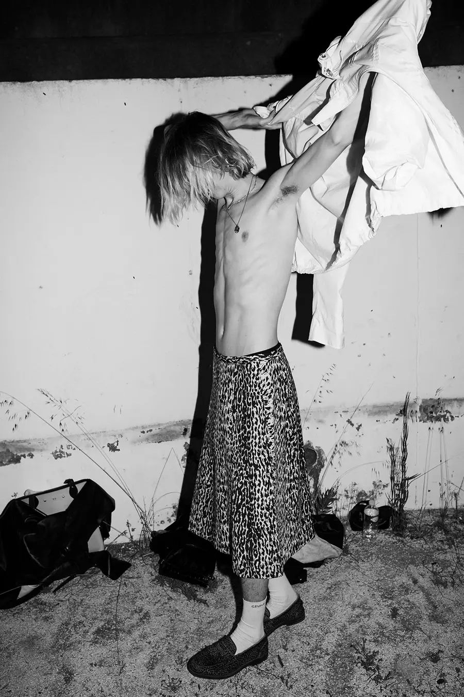

L'esthétique Enfants Riches Déprimés est influencée par la culture punk et grunge des années 1970 et 1980, utilisant des éléments déconstruits et des tissus usés. La production est réalisée en éditions limitées, conformément au positionnement de la marque dans le segment de la mode de luxe.
Les collections de la marque ont été présentées lors de la Fashion Week de Paris et ont été couvertes par les agences de presse internationales.